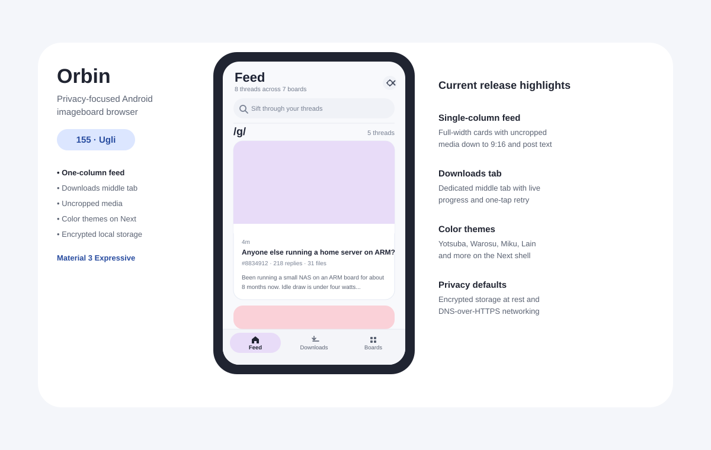
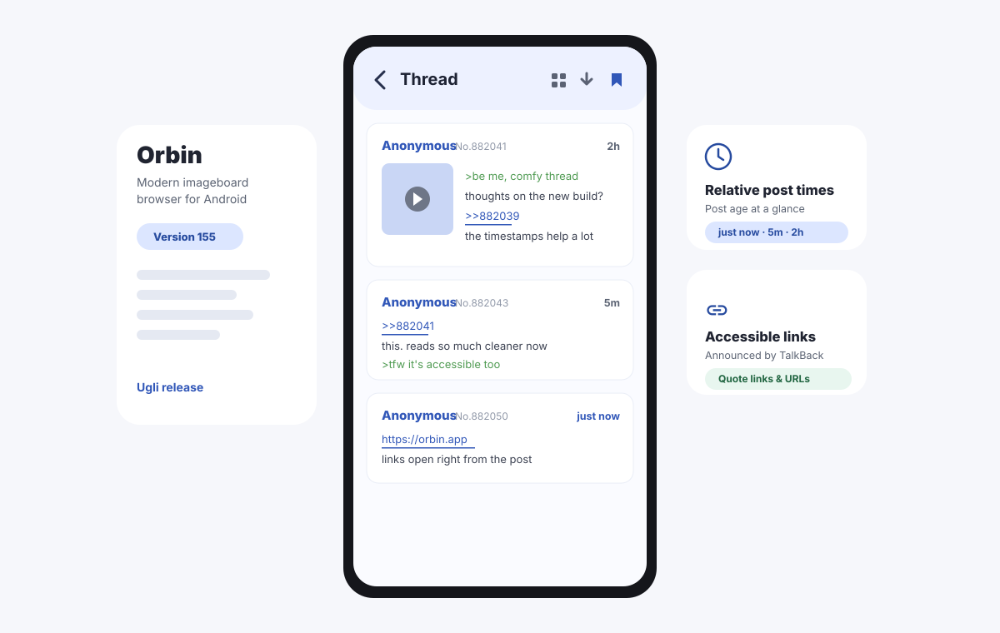
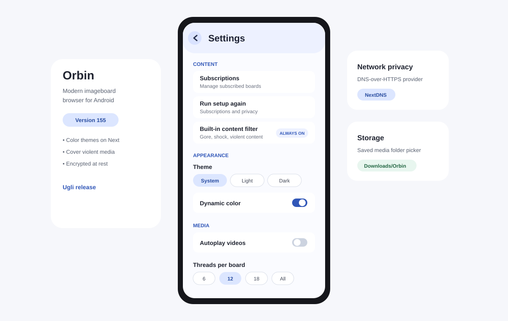

A modern, fast, and beautiful open-source imageboard client for Android — built with Kotlin, Jetpack Compose, and Material 3 Expressive.
Free and AGPLv3-licensed, forever. Not available on Google Play — releases are signed and published on GitHub.
Current release: 155 — Ugli (2026-09-26).
What’s new in 155: Release pages carry just the app and its checksum.
Orbin browses 4chan (vichan/4chan-compatible) and BBW Chan (LynxChan) today, and its provider architecture means new engines can be added by implementing a single interface — no app changes required. It targets Android 12+, is a read-only browsing client (no posting), and ships regular signed releases.
Followed boards grouped A–Z with the most recently active threads first within each board. On phones, the feed displays as a single column of full-width cards with uncropped media down to 9:16 and up to eight lines of readable post text (with HTML entities decoded and line breaks kept). Automatically detects foldables and tablets with customizable column counts. Pull down to refresh; media stays quiet until opened.
Board catalogs use an adaptive card grid where the opening post’s media is shown uncropped at its true aspect ratio instead of a center crop. Wide screens (840dp+) can keep catalog and thread side by side in a two-pane layout without losing navigation state.
Native post markup with greentext, quote links, inline quote previews, backlinks, relative timestamps (just now, 5m, 2h), collapsible replies, tap-to-reveal spoilers, persistent reading position, and thread-watching notifications. Plus, deduplicate and save external thread links as a clean text file to Downloads/Orbin.
The dedicated middle tab lists everything you’ve saved, complete with real-time download progress and one-tap retry for failed files. Media files are neatly organized in Downloads/Orbin by board and thread.
Every board catalog includes a dedicated Media wall to sweep all files on that board. An opt-in deep scan walks threads to discover reply attachments too — slower, and far more thorough than a catalog sweep alone.
Hardware-accelerated Media3 playback with background preloading, pinch-to-zoom, and double-tap zoom on spot. Double-tap left or right to skip 5 seconds (+15s cumulative), drag to scrub with a timestamp bubble, auto-resume longer videos, and swipe up/down to navigate or dismiss. Videos start muted, and unmuting carries over until Orbin closes.
An always-on keyword filter removes gore, shock, and abuse across every board, feed, and search. Additionally, Cover violent media (on by default in Settings) places a spoiler cover over images and videos in posts referencing violence, accidents, or graphic footage until you choose to open them.
Material 3 Expressive styling with flat matte surfaces, light/dark and true-black AMOLED modes, and Color themes (Yotsuba, Warosu, Miku, Lain, Apple, Banana, and more). Settings opens directly from the gear in the Feed header and is kept short and focused: only the options you need, with no cluttered menus.
Orbin checks for new releases on launch (at most once a day) or on demand via Settings → Check for updates. It downloads the signed APK, validates it against its published SHA-256 checksum and Orbin’s signing key, and hands off to Android’s installer with one tap.
Everything local is encrypted at rest: Room database content with SQLCipher and preferences via encrypted DataStore with Android Keystore material. HTTPS-only networking with DNS-over-HTTPS (and automatic system resolver fallback), biometric app lock with FLAG_SECURE recents protection, disabled cloud backup, and user-controlled JSON backup export and import.



Orbin requires Android 12 or newer. Signed APKs (orbin-v<version>.apk) are published on
GitHub Releases with SHA-256 checksums
for every release.
sha256sum -c orbin-<version>.apk.sha256Privacy in Orbin is structural, not a settings checkbox.
History, bookmarks, downloads, and searches live in a SQLCipher-encrypted database; settings in an encrypted DataStore. Keys are hardware-backed and never leave the TEE/StrongBox.
Biometric app-lock gated on a real Keystore cryptographic operation, with FLAG_SECURE keeping locked content out of the recents preview.
HTTPS-only networking enforced end-to-end, encrypted DNS (DNS-over-HTTPS with automatic system resolver fallback), and no cloud backup of local data.
Orbin is open source under the AGPLv3 license, built as a strict multi-module Clean Architecture Kotlin project with Kotlin Multiplatform sharing code with an iOS client. Contributions are welcome.